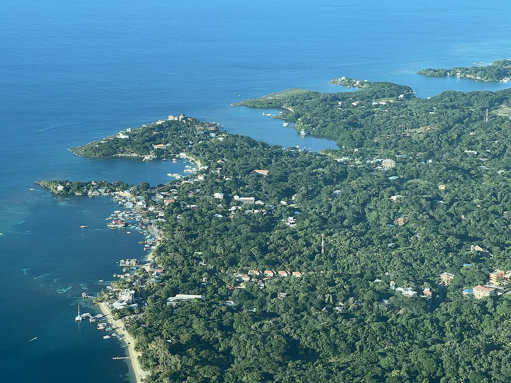

West End
Roatán, Honduras · plongée, snorkeling

Village de plongée sur la deuxième plus grande barrière de corail du monde. Plongée bon marché et récifs à quelques mètres du bord.
- Lieu
- Roatán, Honduras
- Niveau
- Débutant
- Activités
- plongée, snorkeling
- Type d'eau
- Mer / océan
- Coordonnées
- 16.30, -86.60 (position approximative du secteur)
Dangers à connaître
- Récif fragile.
- Circulation de bateaux-taxis.
Le conseil d'Ocean Buddy
Choisis une crème solaire sans filtres chimiques et un centre engagé pour le récif.
Ouvrir dans Ocean Buddy Télécharger sur l'App Store
Source : Fiche Ocean Buddy · septembre 2026 · à vérifier localement.